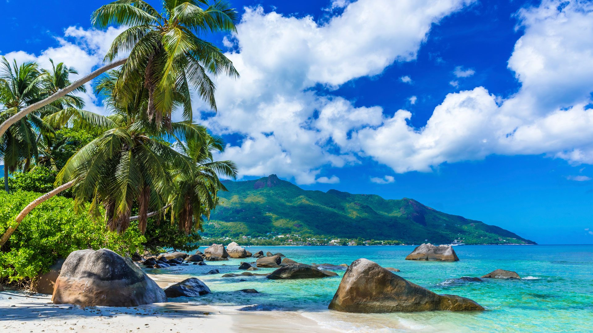

ЕГЗОТИЧНА ПОНУДА

ТРОПСКИ ОСТРОВИ И КРИСТАЛНО МОРЕ
Махе, Сејшели
02.08 - 10.08
Откријте го тропскиот рај на Сејшелите, познат по белите песочни плажи, кристално чистото море и прекрасните тропски пејзажи. Уживајте во мирните острови, палмите и неверојатните зајдисонца. Совршена понуда за релаксација, романтично патување и незаборавна егзотична авантура.
ЕГЗОТИЧНА АВАНТУРА
Најголемиот остров на Сејшелите, познат по главниот град Викторија, прекрасните тропски плажи и бујната природа. Островот нуди совршена комбинација од локална култура, живописно крајбрежје и можности за одмор покрај морето.
Еден од најубавите острови на Сејшелите, познат по природниот резерват Vallée de Mai и уникатната палма Coco de Mer. Бујната тропска природа, прекрасните пејзажи и мирната атмосфера го прават идеален за прошетка и уживање во природата.
Живописен остров познат по прекрасната плажа Anse Source d’Argent и впечатливите гранитни карпи. Островот нуди прекрасни крајбрежни пејзажи, песочни плажи и автентична тропска атмосфера, идеална за прошетка, фотографирање и одмор.
Уживање во тиркизните и кристално чисти води на Сејшелите, со можност за пливање и сноркелинг. Богатиот подводен свет, коралните предели и прекрасното тропско крајбрежје создаваат совршена атмосфера за релаксација и морски активности.
Состанок со групата на аеродром во Скопје, 2 часа пред летот. Следува диретен лет до Истамбул па директен лет до Махе и пристигнување на островот. По завршувањето на аеродромските процедури следува организиран трансфер до хотелот и сместување. По сместувањето следува време за одмор и освежување. Попладнето е предвидено за прва прошетка низ околината и запознавање со местото. Вечерта е слободна за вечера и индивидуални активности. Ноќевање во хотел.
Појадок во хотелот и организирано разгледување на островот Махе. Посета на главниот град Викторија, прошетка низ центарот и разгледување на локалните знаменитости. Следува продолжување кон живописните крајбрежни предели и плажи на островот. Предвидено е слободно време за ручек, кафе и фотографирање. Попладнето следува враќање во хотелот и слободно време за одмор. Ноќевање во хотел.
Појадок и организирано тргнување со брод кон островот Праслин. Следува посета на природниот резерват Vallée de Mai, познат по бујната тропска вегетација и палмата Coco de Mer. Потоа следува прошетка и време за фотографирање и уживање во природата. Попладнето е предвидено слободно време покрај морето и можност за ручек. Во договореното време следува враќање кон Махе. Ноќевање во хотел.
Појадок и организирано тргнување со брод кон островот Ла Диг. Следува посета на познатата плажа Anse Source d’Argent со карактеристичните гранитни карпи. Патниците ќе имаат време за прошетка, фотографирање и уживање на плажата. Потоа следува слободно време за ручек и индивидуално истражување на островот. Во попладневните часови следува враќање со брод кон Махе. Ноќевање во хотел.
Појадок во хотелот и организирано тргнување кон едно од најубавите морски подрачја околу Сејшелите. Следува ден исполнет со пливање, сноркелинг и уживање во тиркизното море. Патниците ќе имаат можност да го истражуваат богатството на морскиот свет и коралните предели. Предвидено е време за одмор, сончање и ручек. Попладнето продолжува со релаксација покрај морето пред враќањето во хотелот. Ноќевање во хотел.
Појадок и организирано тргнување со брод кон околните тропски острови. Следува панорамско крстарење низ архипелагот со прекрасни погледи кон островите и океанот. Предвидено е време за пливање, сноркелинг и релаксација во кристално чистите води. Потоа следува пауза за ручек и слободно време за уживање. Попладнето е предвидено за враќање кон Махе и одмор. Ноќевање во хотел.
Појадок во хотелот и ден посветен на одмор и уживање на една од прекрасните плажи на Махе. Следува слободно време за капење, сончање, прошетка и фотографирање. Во текот на денот патниците ќе имаат можност за ручек, кафе и индивидуални активности. Попладнето продолжува со релаксација покрај морето и уживање во тропската атмосфера. Вечерта е слободна за прошетка, вечера и одмор. Ноќевање во хотел.
Појадок во хотелот и одјавување согласно предвиденото време. По собирањето на багажот следува организиран трансфер до аеродромот. По пристигнувањето следува пријавување за летот и завршување на потребните аеродромски процедури. Потоа следи директен лет до Истамбул, па потоа кон Скопје. По пристигнувањето и преземањето на багажот завршува организираното патување.